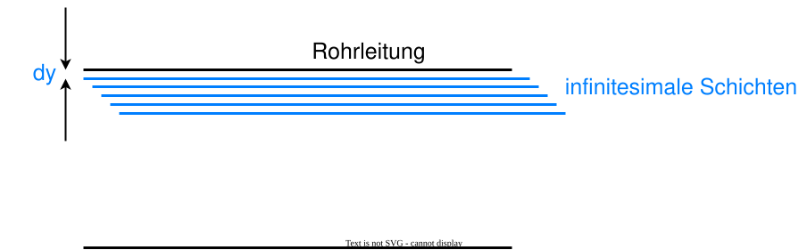
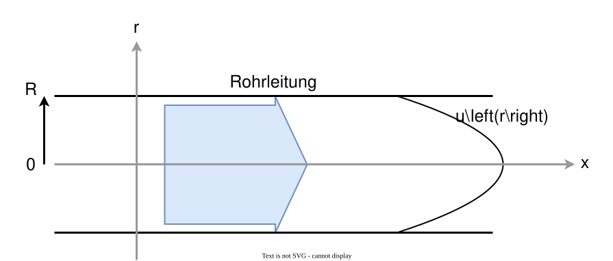
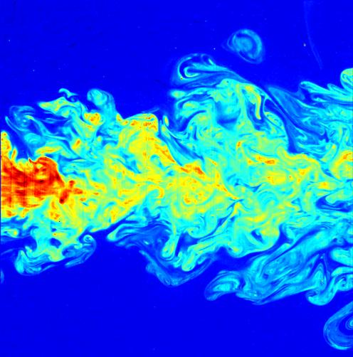

10. Grenzen des einfachen Modells#
Bislang wurden reibungsfreie und laminare Strömungen betrachtet. In Realität treten jedoch Phänomene wie Reibung und Turbulenz auf. Im Folgenden werden diese Inhalte soweit bearbeitet, wie es notwendig ist, um zu verstehen, in welchen Grenzen das einfache Modell der laminaren Strömung gilt und welche Effekte darüber hinaus auftretende Phänomene wie Reibung und Turbulenz haben.
10.1. Viskosität#
Bei realen Strömungen muss der Reibungswiderstand berücksichtigt werden. Die Reibung setzt sich zusammen aus
der Wechselwirkung des Fluids mit der Wand
der Zähigkeit (Viskosität) des Fluids
Die Viskosität bezeichnet die Zähigkeit, von Fluiden, sie wirkt also der Bewegung entgegen. Je höher die Viskosität ist, desto dickflüssiger ist das Fluid. Ein Beispiel für ein Fluid mit hoher Viskosität ist Honig.

Fig. 10.1 Von Synapticrelay#
Um zu verstehen, was dies beispielsweise für eine Rohrströmung bedeutet, teilt man das Fluid in infinitesimale Schichten auf (siehe Abbildung 10.2).


Fig. 10.2 Infinitesimale Schichten in einer Rohrströmung#
Die dynamische Viskosität ist definiert als \(F = \eta \cdot A \frac{\Delta v}{\Delta y}\) Da es sich immer noch um eine laminare Strömung handelt, bedeutet dies, dass \(\perp\) zu Strömungsgeschwindigkeit ein Impulsaustausch, aber kein Massenaustausch stattfindet, d.h. es findet keine Durchmischung der einzelnen Schichten statt.
Dies bedeutet folgendes für eine Rohrströmung:
die Reibung zwischen den Wänden und der ersten Fluidschicht sorgt dafür, dass diese Fluidschicht abgebremst wird
die Reibung zwischen der ersten und zweiten Fluidschicht sorgt dafür, dass versetzt zur ersten Fluidschicht die zweite Fluidschicht abgebremst wird
die Reibung zwischen der zweiten und dritten Fluidschicht sorgt dafür, dass versetzt zur zweiten Fluidschicht die dritte Fluidschicht abgebremst wird
…
Es bildet sich somit ein Profil aus, bei dem die am Rand liegenden Schichten hinter den weiter in der Mitte liegenden Schichten hinterherlaufen.
Die Form dieses Profils lässt sich über eine Kräftebilanz bestimmen. Zum einen wirken Druckkräfte, die das Fluid durch die Rohrleitung drücken. Diese sind gegeben durch \(F_D = A \cdot \Delta p = r^2 \cdot \pi \cdot \Delta p\) mit \(\Delta p = p_1 - p_2\) (Druck am Rohranfang minus Druck am Rohrende)
Die Reibungskräfte wirken der Bewegung entgegen. Sie sind gegeben durch \(F_R = U\cdot l \left( - \eta \frac{du}{dr}\right) = 2 \cdot \pi \cdot r \cdot l \left( - \eta \frac{du}{dr}\right)\), wobei der Term \(- \eta \frac{du}{dr}\) den Impulsübertrag in radiale Richtung beschreibt.
Hierbei ist in der Mitte der Rohrleitung \(r=0\) und am Rand \(r=R\) und \(u(R) = 0\).
Die daraus resultierende Differentialgleichung hat (bei konstanter Druckkraft) die Lösung \(u (r) = \frac{\Delta p}{4 \cdot \eta \cdot l} \left(R^2 - r^2 \right)\)
Die maximale Geschwindigkeit ist bei \(r = 0\): \(u_{max} = \frac{\Delta p \cdot R^2}{4 \cdot \eta \cdot l}\)
Und die mittlere Geschwindigkeit \(\bar{u} = \frac{u_{max}}{2}\)
Dies ist auch bekannt als das Gesetz von Hagen-Poiseuille.


Fig. 10.3 Laminare Rohrströmung mit Geschwindigkeitsprofil#
10.2. Turbulenz#
Bislang wurden laminare Strömungen betrachtet. Kennzeichnend hierfür war, das \(\perp\) zu Strömungsgeschwindigkeit ein Impulsaustausch, aber kein Massenaustausch stattfindet. Ab einer bestimmten Strömungsgeschwindigkeit ist das nicht mehr der Fall, sondern es kommt zu Verwirbelungen. Dies wird auch als Turbulenz bezeichnet.


Fig. 10.4 Turbulenz Von C. Fukushima and J. Westerweel, Technical University of Delft#
1883 machte Reynolds grundlegende Experimente zur Turbulenz und lieferte wichtige theoretische Grundlagen. Er lies einen starken Farbstoff durch eine Fluidströmung mitlaufen und analysierte die dadurch sichtbar gemachten Schichten. Dennoch sind viele Aspekte der Turbulenz auch heute noch ein aktives Forschungsfeld.

Fig. 10.5 Experiment von Reynolds zur Turbulenz Von Svebert#
Auch wenn das Phänomen der Turbulenz ein Kompliziertes ist, kann relativ einfach eine Grenzgeschwindigkeit bestimmt werden, ab der Turbulenz auftritt. So kann abgeschätzt werden, ob in einer bestimmten Strömung Turbulenzeffekte berücksichtigt werden müssen.
Die Größe, die angibt, ob eine Strömung laminar oder turbulent ist die Reynoldszahl
\(Re = \frac{\text{Trägheitskräfte}}{\text{Reibungskräfte}} = \frac{\rho \cdot v \cdot d}{\eta} = \frac{v \cdot d}{\nu}\)
mit
\(\rho =\) Dichte
\(v = \) Strömungsgeschwindigkeit
\(\eta = \nu \cdot \rho\) mit
\(\eta = \) dynamische Viskosität
\(\nu = \) kinematische Viskosität
Turbulenz führt zu Massenaustausch zwischen den einzelnen Schichten. Dies hat zur Folge, dass erhöhte Reibungsverluste auftreten, sodass das in Abbildung 10.3 abgeflacht wird (siehe Abbildung 10.6).

Fig. 10.6 Verbreiterung des Geschwindigkeitsprofils durch Turbulenz Von Svebert#
Bei Rohrströmungen werden als charakteristische Größen üblicherweise der Innendurchmesser \(d\), der Betrag der über den Querschnitt gemittelten Geschwindigkeit \(v_m\) und die kinematische Viskosität \(\nu = \frac{\eta}{\rho}\) verwendet.
\(Re_{Rohr} = \frac{v_m \cdot d}{\nu}\)
Für Rohrströmungen liegt die kritische Reynoldszahl bei \(Re_{krit} \approx 2040 \pm 10\) (häufig wird auch \(\approx 2300\) angegeben). Darunter ist die Strömung laminar.